Ciftelia
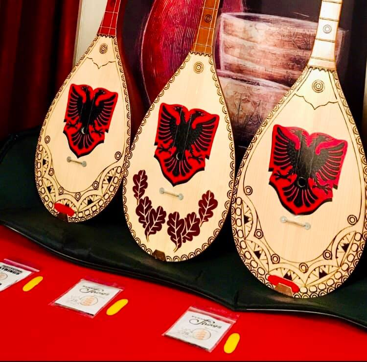The Cifetlia is a plucked string instrument, with only two strings, played mainly by the Gheg people of northern and central Albania, Southern Montenegro, and Kosovo. The çifteli is frequently used by Albanians in weddings and at concerts.
Fyelli
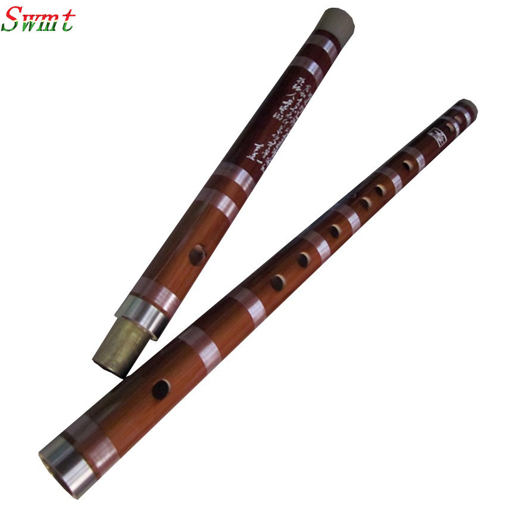 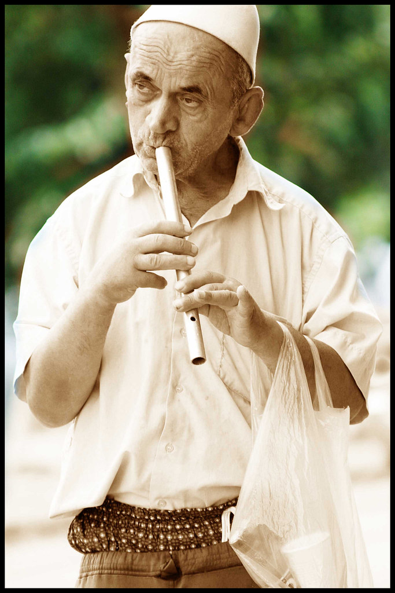The fyell brezi is traditionally hand-crafted out of wood. The wood traditionally used was the inner-most section of the trunk of a Fir tree, as it is the most common type of wood found in Albania. It consists of 6 holes in the front and has a sharp edge at the upper end of the tube. The sharp edge allows the flutists breath to escape, giving the instrument a different tone from most common end-blown flutes. The instrument was most commonly used among shepherds who played it while tending to their flocks. It is regarded as one of the oldest instruments of Albanian folklore. It is also frequently used in folk music and accompanies traditional Albanian festivities and songs.
Daullja
.jpg) 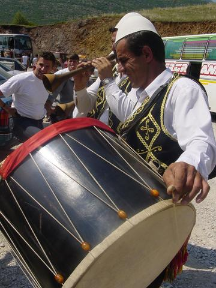
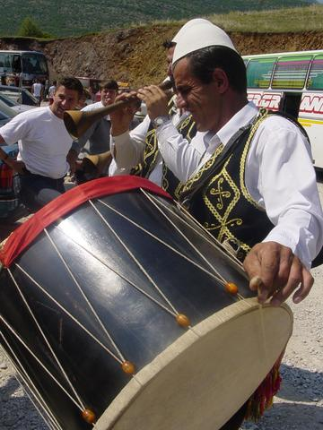
The davul, is a large double-headed drum that is played with mallets.These drums have both a deep bass sound and a thin treble sound due to their construction and playing style, where different heads and sticks are used to produce different sounds on the same drum.The drum shell is made of hard wood, perhaps walnut or chestnut, though many woods may be in use depending on the region where the drum is made.
Dajrja
.jpg) 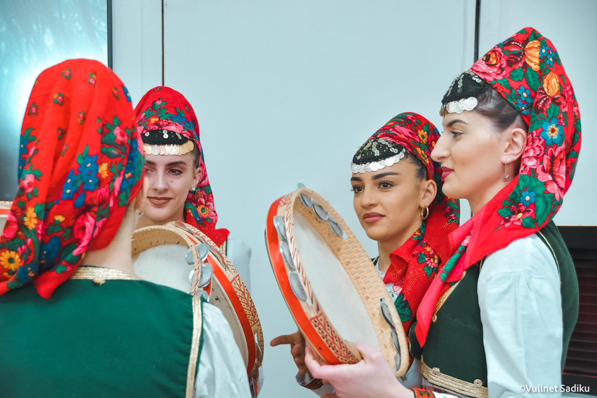
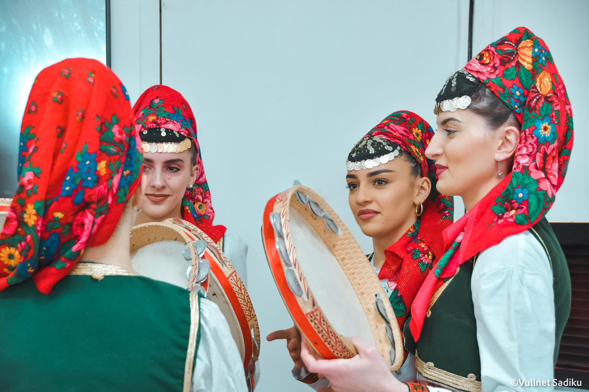
Dajrja is a popular musical instrument, otherwise a kind of harp.Instrument used in Albanian folk music
Lahuta
 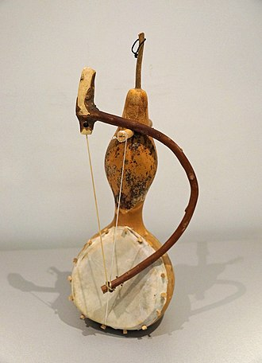
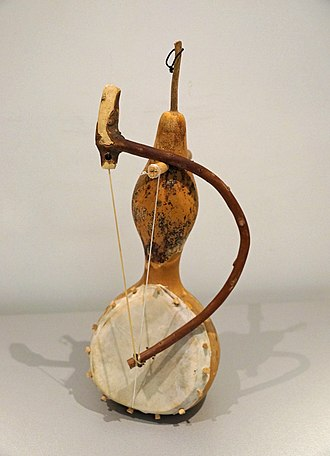
The lute consists of an oval-shaped wooden case, hollowed out inside. This cavity of the case is covered with tanned leather or chapar, as they call it in the Great Highlands, held at the sides with wooden pegs. The sound is produced by bowing the tail of the lute, while chords are changed by touching the tail with the fingers of the other hand.
Sharkia
.jpg) 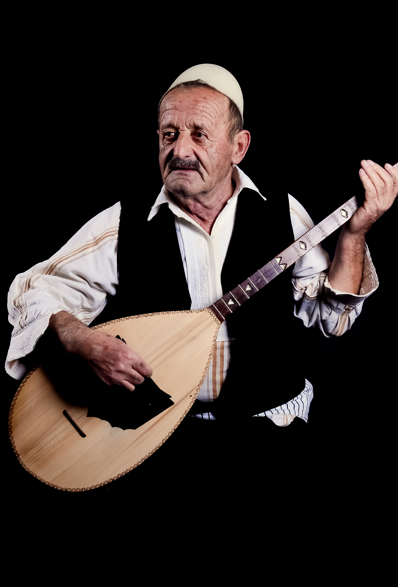
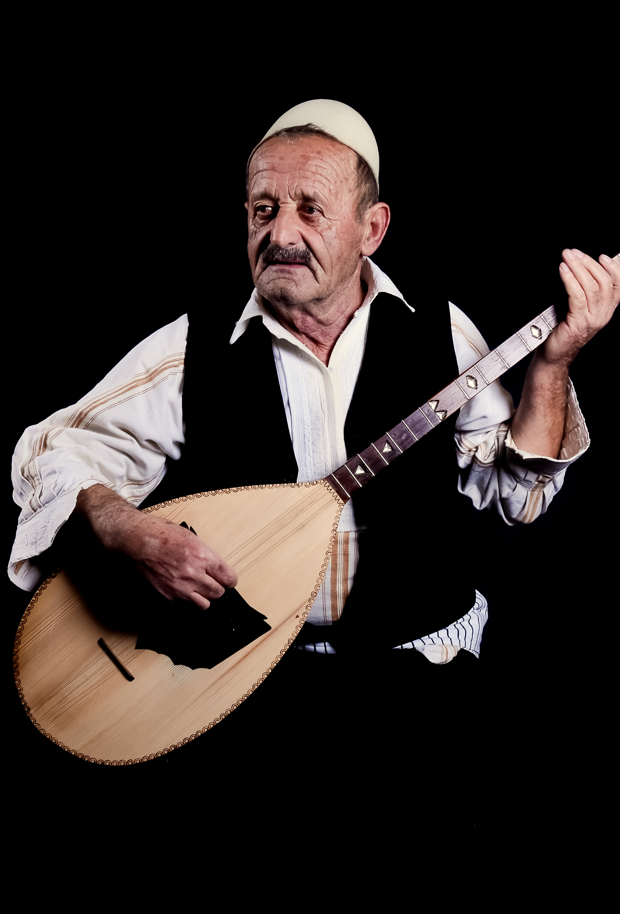
Sharkia is a popular musical instrument usually with five strings (2+1+2). It has a case made from a single piece of wood and a long tail with 14 frets. The game mainly focuses on the first string, the other two hold iso. In the introductions and endings of the phrases, the third string is also included, giving the subbasal tone.